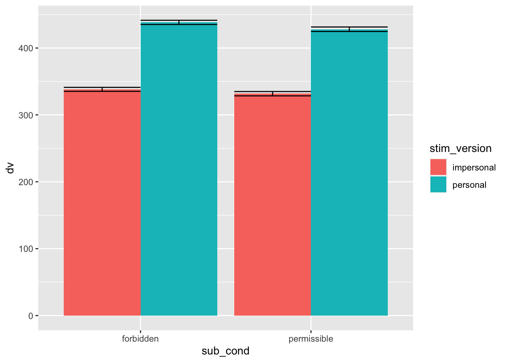
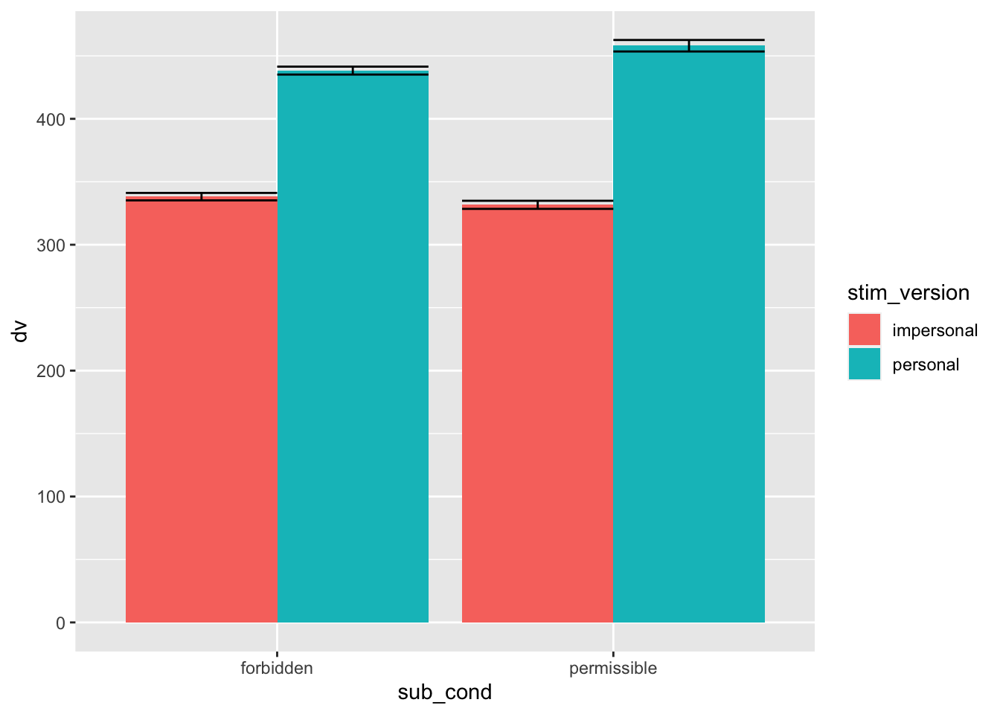

Here we examine (generalised) linear mixed effects models (LMM) with the aim of explaining such models by grounding them in the ANOVA models that you are familiar with. LMMs allow for a great deal of flexibility in data analysis. You can think of t-tests, ANOVA and logistic regression as being a bit like Ikea flat-packed furniture - they are quick and easy to use but might not actually fit your requirements perfectly, and sometimes prove to be a bit of a disaster! LMM are like bespoke furniture, they can be ideally crafted to your specific requirements. For example, LMMs allow one to model variance associated with participants, items, tasks, sites, labs, or anything else that might be part of the data generating process. It is this flexibility that allows one to make better statistical inferences - e.g., better/accurate type I error rates, better power, generalisation to the population of stimuli/items, better handling of missing and unbalanced data, etc. For a practical introduction to LMMs see Brown 2021.
We will generate some data is inspired by Greene et al., (2001) who claimed that the time taken to make moral judgments of personal (e.g., footbridge) vs. impersonal (e.g., bystander) dilemmas varied as a function of the judgment they made, with people who judged a personal dilemmas as morally permissible taking longer to make that judgment. This was taken as evidence for the dual process model, suggesting that judging a personal dilemma as morally permissible requires one to “override” the automatic emotional response to it, employing our slower, deliberative system.
If you want to run the code and have a play around with this yourself you’ll need to install R and RStudio.
We will need to install and/or load the packages that we need into RStudio.
# Package names
packages <- c("ggplot2", "tidyverse", "lme4", "lmerTest", "sjPlot","GGally","faux","afex")
# Install packages not yet installed
installed_packages <- packages %in% rownames(installed.packages())
if (any(installed_packages == FALSE)) {
install.packages(packages[!installed_packages])
}
# Packages loading
library(ggplot2)
library(lme4)
library(lmerTest)
library(tidyverse)
library(sjPlot)
library(GGally)
library(faux)
library(afex)
options(digits = 10)Let’s simulate some complex data for a 2 (stim_version: personal vs. impersonal) x 2 (judgment: permissible vs. forbidden) mixed design with response time (RT) as the DV. We will simulate data for 200 subjects who made judgments of 50 personal and 50 impersonal moral dilemmas. You don’t need to follow the details of this just that we are simulating data where the random effects variances (by-participant and by-stimulus slopes and intercepts and the correlation between them) will not be zero. In other words, particular participants and items had different average RTs and were differently impacted by the experimental manipulations - e.g., some participants/items showed big effects whereas others show no or the opposite effect.
# function for by-subject and by-stimuli random intercepts and slopes
sim_lmer <- function( sub_n = 200,
sub_sd = 100,
sub_version_sd = 20,
sub_i_version_cor = -0.2,
stim_n = 50,
stim_sd = 50,
stim_version_sd = 10,
stim_cond_sd = 30,
stim_cond_version_sd = 15,
stim_i_cor = -0.4,
stim_s_cor = +0.2,
grand_i = 400,
permis_impers = +50,
permis_pers = -50,
forbid_impers = +50,
forbid_pers = -50,
error_sd = 25) {
sub <- faux::rnorm_multi(
n = sub_n,
vars = 2,
r = sub_i_version_cor,
mu = 0, # means of random intercepts and slopes are always 0
sd = c(sub_sd, sub_version_sd),
varnames = c("sub_i", "sub_version_slope")
) %>%
mutate(
sub_id = 1:sub_n,
sub_cond = rep(c("permissible","forbidden"), each = sub_n/2) # between-subjects factor
)
stim_cors <- c(stim_i_cor, stim_i_cor, stim_i_cor,
stim_s_cor, stim_s_cor,
stim_s_cor)
stim <- faux::rnorm_multi(
n = stim_n,
vars = 4,
r = stim_cors,
mu = 0, # means of random intercepts and slopes are always 0
sd = c(stim_sd, stim_version_sd, stim_cond_sd, stim_cond_version_sd),
varnames = c("stim_i", "stim_version_slope", "stim_cond_slope", "stim_cond_version_slope")
) %>%
mutate(
stim_id = 1:stim_n
)
# mean difference between forbidden and permissible conditions
sub_cond_eff <- (forbid_impers + forbid_pers)/2 -
(permis_impers + permis_pers)/2
# mean difference between personal and impersonal versions
stim_version_eff <- (forbid_pers + permis_pers)/2 -
(forbid_impers + permis_impers)/2
# interaction between version and condition
cond_version_ixn <- (forbid_pers - forbid_impers) -
(permis_pers - permis_impers)
trials <- crossing(
sub_id = sub$sub_id, # get subject IDs from the sub data table
stim_id = stim$stim_id, # get stimulus IDs from the stim data table
stim_version = c("personal", "impersonal") # all subjects see both congruent and incongruent versions of all stimuli
) %>%
left_join(sub, by = "sub_id") %>% # includes the intercept, slope, and condition for each subject
left_join(stim, by = "stim_id") # includes the intercept and slopes for each stimulus
dat <- trials %>%
mutate(
# effect-code subject condition and stimulus version
sub_cond.e = recode(sub_cond, "permissible" = -0.5, "forbidden" = +0.5),
stim_version.e = recode(stim_version, "personal" = -0.5, "impersonal" = +0.5),
# calculate trial-specific effects by adding overall effects and slopes
cond_eff = sub_cond_eff + stim_cond_slope,
version_eff = stim_version_eff + stim_version_slope + sub_version_slope,
cond_version_eff = cond_version_ixn + stim_cond_version_slope,
# calculate error term (normally distributed residual with SD set above)
err = rnorm(nrow(.), 0, error_sd),
# calculate DV from intercepts, effects, and error
dv = grand_i + sub_i + stim_i + err +
(sub_cond.e * cond_eff) +
(stim_version.e * version_eff) +
(sub_cond.e * stim_version.e * cond_version_eff)
)
# get data in environment
assign("dat", dat, envir = .GlobalEnv)
return(dat)
}Let’s run the function we have created.
sim_lmer()## # A tibble: 20,000 × 17
## sub_id stim_id stim_version sub_i sub_version_slope sub_cond stim_i
## <int> <int> <chr> <dbl> <dbl> <chr> <dbl>
## 1 1 1 impersonal -151. 28.6 permissible -87.9
## 2 1 1 personal -151. 28.6 permissible -87.9
## 3 1 2 impersonal -151. 28.6 permissible -45.4
## 4 1 2 personal -151. 28.6 permissible -45.4
## 5 1 3 impersonal -151. 28.6 permissible 37.8
## 6 1 3 personal -151. 28.6 permissible 37.8
## 7 1 4 impersonal -151. 28.6 permissible -31.5
## 8 1 4 personal -151. 28.6 permissible -31.5
## 9 1 5 impersonal -151. 28.6 permissible -48.0
## 10 1 5 personal -151. 28.6 permissible -48.0
## # ℹ 19,990 more rows
## # ℹ 10 more variables: stim_version_slope <dbl>, stim_cond_slope <dbl>,
## # stim_cond_version_slope <dbl>, sub_cond.e <dbl>, stim_version.e <dbl>,
## # cond_eff <dbl>, version_eff <dbl>, cond_version_eff <dbl>, err <dbl>,
## # dv <dbl>You can see the data (the dataframe “dat”) pop up in the environment. In addition, we can see the data with subject ID, stimulus ID, stimulus version, and all of the random effects for each participant and stimuli. Let’s plot the data to get an idea of what it’s showing.
ggplot(dat, aes(sub_cond, dv, fill = stim_version)) +
stat_summary(aes(sub_cond, dv, fill = stim_version), fun = "mean", geom = "bar", position="dodge")+
stat_summary(fun.data = "mean_cl_normal", geom = "errorbar", position="dodge") The figure suggests that participants are slower when judging personal (vs. impersonal) dilemmas - i.e., a main effect of stimulus/dilemma type. This effect doesn’t seem to vary depending on whether the judgment is permissible or forbidden. However, it does seem that, on average, folks take longer when they see a dilemma as morally permissible.
a “maximal” model (see Barr et al., 2013) with all random intercepts and slopes by-participant and by-stimulus.
Let’s run a series of statistical models in order to examine the effect of dilemma type and moral judgment on response time. First let’s set some deviation coding for ease of interpretation. This means the main effects will be mean differences and the interaction will be the difference of the mean differences.
#set deviation contrasts for ease of interpretation -.5 vs .5
c<-contr.treatment(2)
my.coding<-matrix(rep(1/2, 2), ncol=1)
my.simple<-c-my.coding
my.simple
#dilemma type -.5 impersonal, .5 personal
dat$stim_version <- as.factor(dat$stim_version)
contrasts(dat$stim_version)<-my.simple
contrasts(dat$stim_version)
#Judgment type -.5 forbidden, .5 permissible
dat$sub_cond <- as.factor(dat$sub_cond)
contrasts(dat$sub_cond)<-my.simple
contrasts(dat$sub_cond)Let’s start with a simple model that you are familiar with, a simple one-way repeated measures ANOVA.
ANOVA1 <- aov_4(dv ~ (stim_version|sub_id), data=dat)## Warning: More than one observation per design cell, aggregating data using `fun_aggregate = mean`.
## To turn off this warning, pass `fun_aggregate = mean` explicitly.ANOVA1## Anova Table (Type 3 tests)
##
## Response: dv
## Effect df MSE F ges p.value
## 1 stim_version 1, 199 198.36 4865.88 *** .190 <.001
## ---
## Signif. codes: 0 '***' 0.001 '**' 0.01 '*' 0.05 '+' 0.1 ' ' 1As suggested by the plot, we can see a significant main effect of dilemma/stimuli type. Participants take longer making a judgment of personal (vs. impersonal) dilemmas.
Let’s fit a linear mixed model with by-subjects random intercept and slope (random effects) and dilemma/stimuli type (fixed effect).
#random slope of stim_version within subjects with correlated intercept
mod1 <- lmer(dv ~ stim_version +
(1+stim_version|sub_id),
data = dat)
mod1.sum <- summary(mod1)
mod1.sum## Linear mixed model fit by REML. t-tests use Satterthwaite's method [
## lmerModLmerTest]
## Formula: dv ~ stim_version + (1 + stim_version | sub_id)
## Data: dat
##
## REML criterion at convergence: 217299.5
##
## Scaled residuals:
## Min 1Q Median 3Q Max
## -3.0877320 -0.6765580 -0.0485672 0.6117997 3.8171290
##
## Random effects:
## Groups Name Variance Std.Dev. Corr
## sub_id (Intercept) 10241.4890 101.20024
## stim_version2 282.5241 16.80845 0.28362
## Residual 2855.1893 53.43397
## Number of obs: 20000, groups: sub_id, 200
##
## Fixed effects:
## Estimate Std. Error df t value Pr(>|t|)
## (Intercept) 384.064987 7.165906 199.000331 53.59615 < 2.22e-16 ***
## stim_version2 98.245573 1.408424 198.998667 69.75568 < 2.22e-16 ***
## ---
## Signif. codes: 0 '***' 0.001 '**' 0.01 '*' 0.05 '.' 0.1 ' ' 1
##
## Correlation of Fixed Effects:
## (Intr)
## stim_versn2 0.239The model also shows a significant main effect of dilemma/stimuli type. Indeed, we can tell that the models are equivalent by comparing the F and t values. Since we know that F = t2 we can see that 59.926432 = 3591.177013 or 3591.18 as per the F from the ANOVA. The estimates are more informative than the ANOVA table as they tell us that (given our coding) as you go from impersonal (coded -0.5) to personal (coded 0.5), that is an increase in one unit of dilemma/stimuli type, you see an increase in response time of 101.15 ms. This is the mean difference between conditions or the (unstandardised) effect size. If we standardised the DV and ran the model this would be the standardised mean difference (or “d”). Another advantage of using the LMM version of the model is that it is trivially easy to return the 95% confidence intervals on this effect size (mean difference).
confint(mod1, parm = "beta_")## Computing profile confidence intervals ...## 2.5 % 97.5 %
## (Intercept) 369.98767865 398.1422950
## stim_version2 95.47875467 101.0123779This suggests that under repeated sampling (running experiments in the long run) 95% of these confidence intervals would contain the true parameter value. Unfortunately, we don’t know if these CIs are one of the 95% of confidence intervals that contain the true parameter value! Indeed, the 95% CIs are often taken to be a measure of precision of the estimate. Technically this would only apply if these were the same as the Bayesian credible intervals (the Bayesian version of CIs), but let’s just pretend that they are roughly (not statistically) speaking measures of precision, assuming they will be similar to Bayesian credible intervals.
Let’s specify the full ANOVA model with dilemma/stimuli type (personal vs. impersonal) within-subjects and judgment (permissible vs. forbidden) between-subjects.
ANOVA2 <- aov_4(dv ~ sub_cond + (stim_version|sub_id), data=dat)## Warning: More than one observation per design cell, aggregating data using `fun_aggregate = mean`.
## To turn off this warning, pass `fun_aggregate = mean` explicitly.## Contrasts set to contr.sum for the following variables: sub_condANOVA2## Anova Table (Type 3 tests)
##
## Response: dv
## Effect df MSE F ges p.value
## 1 sub_cond 1, 198 20608.40 0.34 .002 .560
## 2 stim_version 1, 198 197.58 4885.14 *** .190 <.001
## 3 sub_cond:stim_version 1, 198 197.58 1.79 <.001 .183
## ---
## Signif. codes: 0 '***' 0.001 '**' 0.01 '*' 0.05 '+' 0.1 ' ' 1Only the main effect of dilemma type is significant. The between-subjects judgment is not significant, neither is the interaction.
Let’s fit a linear mixed model with by-subjects random intercept and slope (random effects) and dilemma/stimuli type, judgment (sub_cond) and their interaction (fixed effects).
#random slope of stim_version within subjects with correlated intercept
mod2 <- lmer(dv ~ sub_cond + stim_version + sub_cond*stim_version +
(1+stim_version|sub_id),
data = dat)
mod2.sum <- summary(mod2)
mod2.sum## Linear mixed model fit by REML. t-tests use Satterthwaite's method [
## lmerModLmerTest]
## Formula: dv ~ sub_cond + stim_version + sub_cond * stim_version + (1 +
## stim_version | sub_id)
## Data: dat
##
## REML criterion at convergence: 217286.6
##
## Scaled residuals:
## Min 1Q Median 3Q Max
## -3.0831872 -0.6762775 -0.0483569 0.6109423 3.8126269
##
## Random effects:
## Groups Name Variance Std.Dev. Corr
## sub_id (Intercept) 10275.2205 101.36676
## stim_version2 280.9479 16.76150 0.28067
## Residual 2855.1911 53.43399
## Number of obs: 20000, groups: sub_id, 200
##
## Fixed effects:
## Estimate Std. Error df t value Pr(>|t|)
## (Intercept) 384.064987 7.177664 198.012341 53.50835 < 2e-16 ***
## sub_cond2 -8.377017 14.355328 198.012341 -0.58355 0.56019
## stim_version2 98.245573 1.405624 198.007220 69.89465 < 2e-16 ***
## sub_cond2:stim_version2 -3.758816 2.811247 198.007220 -1.33706 0.18274
## ---
## Signif. codes: 0 '***' 0.001 '**' 0.01 '*' 0.05 '.' 0.1 ' ' 1
##
## Correlation of Fixed Effects:
## (Intr) sb_cn2 stm_v2
## sub_cond2 0.000
## stim_versn2 0.236 0.000
## sb_cnd2:s_2 0.000 0.236 0.000As you can the results are equivalent. If you wanted identical results to lots of decimal places this notation would probably be better.
#uncorrelated random intercept and random slope within subjects
mod3 <- lmer(dv ~ sub_cond + stim_version + sub_cond*stim_version +
(1|sub_id) + (0+stim_version|sub_id),
data = dat, control = lmerControl(optimizer = "bobyqa"))## Warning in checkConv(attr(opt, "derivs"), opt$par, ctrl = control$checkConv, : Model is nearly unidentifiable: large eigenvalue ratio
## - Rescale variables?## Warning: Model failed to converge with 1 negative eigenvalue: -1.3e-03mod3.sum <- summary(mod3)
mod3.sum## Linear mixed model fit by REML. t-tests use Satterthwaite's method [
## lmerModLmerTest]
## Formula: dv ~ sub_cond + stim_version + sub_cond * stim_version + (1 |
## sub_id) + (0 + stim_version | sub_id)
## Data: dat
## Control: lmerControl(optimizer = "bobyqa")
##
## REML criterion at convergence: 217286.6
##
## Scaled residuals:
## Min 1Q Median 3Q Max
## -3.0831860 -0.6762763 -0.0483568 0.6109425 3.8126256
##
## Random effects:
## Groups Name Variance Std.Dev. Corr
## sub_id (Intercept) 9073.7391 95.25618
## sub_id.1 stim_versionimpersonal 795.2502 28.20018
## stim_versionpersonal 1749.1047 41.82230 0.95956
## Residual 2855.1893 53.43397
## Number of obs: 20000, groups: sub_id, 200
##
## Fixed effects:
## Estimate Std. Error df t value Pr(>|t|)
## (Intercept) 384.064987 7.177823 197.998860 53.50717 < 2e-16 ***
## sub_cond2 -8.377017 14.355646 197.998860 -0.58353 0.56020
## stim_version2 98.245573 1.405641 197.999903 69.89379 < 2e-16 ***
## sub_cond2:stim_version2 -3.758816 2.811282 197.999903 -1.33705 0.18274
## ---
## Signif. codes: 0 '***' 0.001 '**' 0.01 '*' 0.05 '.' 0.1 ' ' 1
##
## Correlation of Fixed Effects:
## (Intr) sb_cn2 stm_v2
## sub_cond2 0.000
## stim_versn2 0.236 0.000
## sb_cnd2:s_2 0.000 0.236 0.000
## optimizer (bobyqa) convergence code: 0 (OK)
## Model is nearly unidentifiable: large eigenvalue ratio
## - Rescale variables?The problem with ANOVA is that you can only add one random factor (e.g., participant). As the ANOVA warning above informed us, dilemma was averaged over. What’s the problem with averaging across one potential random factor? Well, we know that when you average you lose information, which can’t be a good thing in terms of science. This averaging over dilemma/item leads to considerable inflation in the type I error rate. That is, the 0.05 alpha you are expecting isn’t really 0.05 see Judd, Westfall & Kenny (2012).
We can demonstrate how this works by adding a constant of 500 ms to first three items in the personal, permissible condition. Remember there are 100 items that didn’t show any interaction effect, so making 3 items out of 100 take a little longer to respond to shouldn’t determine whether there is an interaction effect, right?
dat1 <- dat %>% mutate(dv = case_when(sub_cond == "permissible" & stim_version == "personal" & stim_id < 4 ~ dv+500, TRUE ~ dv))We can see that the mean RT when participants judge personal dilemmas (like the footbridge) is higher than the other conditions. Specifically, the data are suggesting that the effect of dilemma type (stim_version) is greater when participants see the action as morally permissible.
ggplot(dat1, aes(sub_cond, dv, fill = stim_version)) +
stat_summary(aes(sub_cond, dv, fill = stim_version), fun = "mean", geom = "bar", position="dodge")+
stat_summary(fun.data = "mean_cl_normal", geom = "errorbar", position="dodge")
Let’s run the full ANOVA model again the new data that includes the 3 weird items in the personal/permissible condition.
ANOVA3 <- aov_4(dv ~ sub_cond + (stim_version|sub_id), data=dat1)## Warning: More than one observation per design cell, aggregating data using `fun_aggregate = mean`.
## To turn off this warning, pass `fun_aggregate = mean` explicitly.## Contrasts set to contr.sum for the following variables: sub_condANOVA3## Anova Table (Type 3 tests)
##
## Response: dv
## Effect df MSE F ges p.value
## 1 sub_cond 1, 198 20608.40 0.21 .001 .645
## 2 stim_version 1, 198 197.58 6490.73 *** .237 <.001
## 3 sub_cond:stim_version 1, 198 197.58 87.13 *** .004 <.001
## ---
## Signif. codes: 0 '***' 0.001 '**' 0.01 '*' 0.05 '+' 0.1 ' ' 1Now we can see that the interaction between judgment (sub_cond) and dilemma type (stim_version) is significant. All on the basis of 3 weird dilemmas out of 100 (less than 5 out 100!).
We can use linear mixed effects models to run an equivalent model to the above ANOVA.
Let’s fit the linear mixed model with by-subjects random intercept and slope (random effects) and dilemma/stimuli type, judgment (sub_cond) and their interaction (fixed effects).
#random slope of stim_version within subjects with correlated intercept
mod4 <- lmer(dv ~ sub_cond + stim_version + sub_cond*stim_version +
(1+stim_version|sub_id),
data = dat1)
mod4.sum <- summary(mod4)
mod4.sum## Linear mixed model fit by REML. t-tests use Satterthwaite's method [
## lmerModLmerTest]
## Formula: dv ~ sub_cond + stim_version + sub_cond * stim_version + (1 +
## stim_version | sub_id)
## Data: dat1
##
## REML criterion at convergence: 231891.4
##
## Scaled residuals:
## Min 1Q Median 3Q Max
## -2.5427629 -0.5521201 -0.0983631 0.3858573 7.2556792
##
## Random effects:
## Groups Name Variance Std.Dev. Corr
## sub_id (Intercept) 10244.1917 101.21359
## stim_version2 154.5564 12.43207 0.37903
## Residual 6015.1278 77.55725
## Number of obs: 20000, groups: sub_id, 200
##
## Fixed effects:
## Estimate Std. Error df t value Pr(>|t|)
## (Intercept) 391.564987 7.177863 197.995908 54.55175 < 2e-16 ***
## sub_cond2 6.622983 14.355726 197.995908 0.46135 0.64506
## stim_version2 113.245573 1.405634 198.000506 80.56546 < 2e-16 ***
## sub_cond2:stim_version2 26.241184 2.811268 198.000506 9.33429 < 2e-16 ***
## ---
## Signif. codes: 0 '***' 0.001 '**' 0.01 '*' 0.05 '.' 0.1 ' ' 1
##
## Correlation of Fixed Effects:
## (Intr) sb_cn2 stm_v2
## sub_cond2 0.000
## stim_versn2 0.236 0.000
## sb_cnd2:s_2 0.000 0.236 0.000Let’s fit the linear mixed model with by-subjects random intercept and slope and by-dilemmas random intercept and slopes (random effects) and dilemma/stimuli type, judgment (sub_cond) and their interaction (fixed effects).
#random slope of stim_version within subjects with correlated intercept and random slopes of stim_version, judgment, aand thier interaction within dielmmas with correlated intercept
mod5 <- lmer(dv ~ sub_cond + stim_version + sub_cond*stim_version +
(1+stim_version|sub_id) + (1 + stim_version*sub_cond | stim_id),
data = dat1, control = lmerControl(optimizer = "bobyqa"))
mod5.sum <- summary(mod5)
mod5.sum## Linear mixed model fit by REML. t-tests use Satterthwaite's method [
## lmerModLmerTest]
## Formula: dv ~ sub_cond + stim_version + sub_cond * stim_version + (1 +
## stim_version | sub_id) + (1 + stim_version * sub_cond | stim_id)
## Data: dat1
## Control: lmerControl(optimizer = "bobyqa")
##
## REML criterion at convergence: 188673.3
##
## Scaled residuals:
## Min 1Q Median 3Q Max
## -3.6049338 -0.6658690 0.0045052 0.6752169 4.0350061
##
## Random effects:
## Groups Name Variance Std.Dev. Corr
## sub_id (Intercept) 10297.9217 101.47868
## stim_version2 369.9744 19.23472 0.24434
## stim_id (Intercept) 2709.7026 52.05480
## stim_version2 3555.5507 59.62844 0.56115
## sub_cond2 3578.3939 59.81968 0.59659 0.92733
## stim_version2:sub_cond2 14273.4928 119.47172 0.41912 0.97189 0.90744
## Residual 629.7829 25.09548
## Number of obs: 20000, groups: sub_id, 200; stim_id, 50
##
## Fixed effects:
## Estimate Std. Error df t value Pr(>|t|)
## (Intercept) 391.564987 10.281787 152.230496 38.08336 < 2e-16 ***
## sub_cond2 6.622983 16.662901 241.364248 0.39747 0.69137
## stim_version2 113.245573 8.549084 51.568978 13.24651 < 2e-16 ***
## sub_cond2:stim_version2 26.241184 17.128140 51.559558 1.53205 0.13162
## ---
## Signif. codes: 0 '***' 0.001 '**' 0.01 '*' 0.05 '.' 0.1 ' ' 1
##
## Correlation of Fixed Effects:
## (Intr) sb_cn2 stm_v2
## sub_cond2 0.217
## stim_versn2 0.423 0.464
## sb_cnd2:s_2 0.296 0.488 0.946Here we can see that the interaction is not significant. When we model dilemma as a random factor we are able to model the variance associated with the weirdly slow 3 dilemmas and this means that the standard erros used to test the significance reflect this variance and so are larger, making the once significant effect now non-significant.
Only LMMs allow us to avoid these kinds of type I errors that occur via aggregating across dilemmas/multiple items in an experiment. In addition, adding dilemma as a random factor also allows us to generalise to the population of dilemmas from which our chosen 100 dilemmas were chosen (see this talk by Tal Yarkoni). Strictly, if you have multiple items and find an effect averaged across them, then you can only generalise the effect to the stimuli used in the study - not what researchers usually want to do with their generalisations!